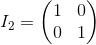
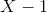
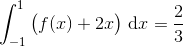

Bacalaureat Matematică 2017 | Tehnologic | Model de subiect
Subiectul I
Rezolvare:
.
- Se consideră funcția
 , . Determinați coordonatele punctului de intersecție a graficului funcției
, . Determinați coordonatele punctului de intersecție a graficului funcției  cu axa
cu axa  .
.
Rezolvare:
Pentru a determina coordonatele punctului de intersecţie ale graficului funcţiei  cu axa , calculăm :
cu axa , calculăm :

Astfel, am obținut coordonatele punctului de intersecţie ale graficului funcţiei cu axa :  şi .
şi .
Rezolvare:
Cei doi logaritmi au aceeaşi bază, adică  , deci putem egala cantităţile de sub logaritmi:
, deci putem egala cantităţile de sub logaritmi:
.
Rezolvare:
Notăm cu preţul obiectului înainte de ieftinire. Scriem ecuaţia asociată datelor din enunţ:
.
Deci preţul obiectului înainte de ieftinire a fost lei.
- În reperul cartezian
 se consideră punctele
se consideră punctele  şi . Calculați distanța de la punctul
şi . Calculați distanța de la punctul  la mijlocul segmentului
la mijlocul segmentului  .
.
Rezolvare:
Notăm cu mijlocul segmentului . Aflăm coordonatele lui :
.
Calculă distanţa de la  la :
la :
.
Rezolvare:
Calculăm folosind formula fundamentală a trigonometriei:

0 \Rightarrow \sin x = \frac{\sqrt{2}}{2} \end{align*}">
Atunci:
Subiectul II
- Se consideră matricele , și .
- Calculați
 .
. - Arătați că .
- Determinați numerele reale
 , pentru care .
, pentru care .
Rezolvare:
- Calculăm :
- Calculăm pe rând termenii ecuației date:
.

.
 .
.
Atunci, succesiv, avem că:
![\begin{align*} &9\cdot (A+B)-(A\cdot B+B\cdot A)=\\\\&=9\cdot \begin{pmatrix} 9 & 6 \\ 6 & 9 \end{pmatrix}-\bigg[\begin{pmatrix} 12 &6 \\ 48 & 24 \end{pmatrix}+\begin{pmatrix} 24 & 48\\ 6 & 12 \end{pmatrix}\bigg]\\\\&=\begin{pmatrix} 9\cdot 9 & 9\cdot 6\\ 9\cdot 6 & 9\cdot 9 \end{pmatrix}-\begin{pmatrix} 12+24 &6+48 \\ 48+6 & 24+12 \end{pmatrix}\\\\&=\begin{pmatrix} 81 & 54\\ 54 & 81 \end{pmatrix}-\begin{pmatrix} 36 & 54\\ 54 & 36 \end{pmatrix}\\\\&=\begin{pmatrix} 81-36 & 54-54\\ 54-54 & 81-36 \end{pmatrix}\\\\&=\begin{pmatrix} 45 & 0\\ 0 & 45 \end{pmatrix}\\\\&=45\cdot \begin{pmatrix} 1 & 0\\ 0 & 1 \end{pmatrix}\\\\&=45\cdot I_2 \end{align*}](../../../../media/webbooks/825/6614/images/equations/-nnr5e12o6ckuff-qjk5pw==.svg)
.
- Calculăm :
.
Atunci, succesiv, avem că:
.
Calculăm :
Știm din enunț că .
Atunci, obținem:

sau
Așadar, are loc dacă sau  .
.
- Se consideră polinomul .
- Arătați că .
- Determinaţi câtul și restul împărțirii polinomului la polinomul .
- Demonstrați că , unde
 și
și  sunt rădăcinile polinomului .
sunt rădăcinile polinomului .
Rezolvare:
- Calculăm :
.
- Împărțim polinomul la polinomul :

Obţinem astfel câtul şi restul egal .
- Folosind Relaţiile lui Viète, calculăm şi :
Atunci, succesiv, avem că:
.
.
Subiectul III
- Se consideră funcţia , .
- Arătați că ,
 .
. - Calculați .
- Determinați ecuația tangentei la graficul funcției în punctul de abscisă
 , situat pe graficul funcției .
, situat pe graficul funcției .
Rezolvare:
- Calculăm :
, .
- Calculăm limita cerută:
![\begin{align*} &\lim_{x\rightarrow+\infty}\frac{2x^3-f(x)}{f'(x)}=\\\\ &=\lim_{x\rightarrow+\infty}\frac{2x^3-2x^3+9x^2-12x-1}{6\cdot(x-1)\cdot(x-2)}\\\\ &=\lim_{x\rightarrow+\infty}\frac{9x^2-12x-1}{6\cdot(x-1)\cdot(x-2)}\\\\ &=\lim_{x\rightarrow+\infty}\frac{9x^2-12x-1}{6x^2-18x+12}\\\\ &=\lim_{x\rightarrow+\infty}\frac{x^2\left (9-\dfrac{12}{x}-\dfrac{1}{x^2} \right )}{x^2\left (6-\dfrac{18}{x}+\dfrac{12}{x^2} \right )}\\\\ &=\lim_{x\rightarrow+\infty}\frac{9-\dfrac{12}{x}-\dfrac{1}{x^2} }{6-\dfrac{18}{x}+\dfrac{12}{x^2} }\\\\ &=\frac{9}{6}\\\\&=\frac{3}{2} \end{align*}](../../../../media/webbooks/825/6614/images/equations/sofvp4ny4nqgagb8zsb4kg==.gif)
,
deoarece
,
,
,
.
- Ecuaţia tangentei în punctul de abscisă
 este . Calculăm şi :
este . Calculăm şi :
Atunci, ecuația tangentei devine:
- Se consideră funcţia , .
- Arătați că .
- Calculați .
- Demonstrați că suprafaţa plană delimitată de graficul funcţiei , axa şi dreptele de ecuaţii
 şi are aria egală cu
şi are aria egală cu  .
.
Rezolvare:
- Calculăm :
.
- Calculăm :
![\begin{align*}&\int_{0}^{1}e^x\cdot\big(x^2-f(x)\big)\ \mathrm{d}x=\\\\ &=\int_{0}^{1}e^x\cdot(x^2-x^2+2x)\ \mathrm{d}x\\\\ &=\int_{0}^{1}e^x\cdot 2x \ \mathrm{d}x\\\\ &=2\cdot \int_{0}^{1}e^x\cdot x\ \mathrm{d}x\\\\ &=2\cdot\bigg(x\cdot e^x\ \bigg|_{0}^{1}-\int_{0}^{1}e^x\ \mathrm{d}x\bigg)\\\\ &=2\cdot x\cdot e^x\ \bigg|_{0}^{1}-2\cdot \int_{0}^{1}e^x\ \mathrm{d}x\\\\ &=(2\cdot 1\cdot e^1-2\cdot 0\cdot e^0)-2e^x\ \bigg|_{0}^{1}\\\\ &=(2\cdot e-0)-\left ( 2\cdot e^1-2\cdot e^0 \right )\\\\ &=2e-(2e-2\cdot 1)\\\\&=2e-2e+2\\\\&=2 \end{align*}](../../../../media/webbooks/825/6614/images/equations/szh-pjjaaduy5bvzzjoeuq==.gif)
.
- Calculăm aria suprafeței indicate, folosind următoarea formulă:

.